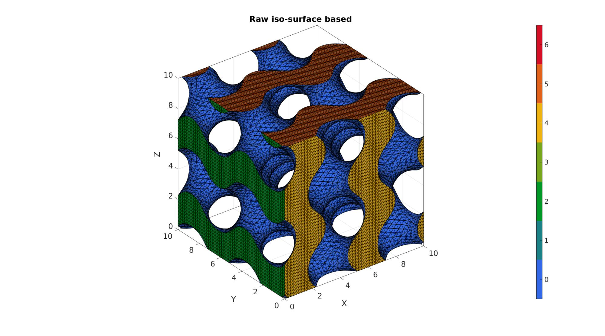
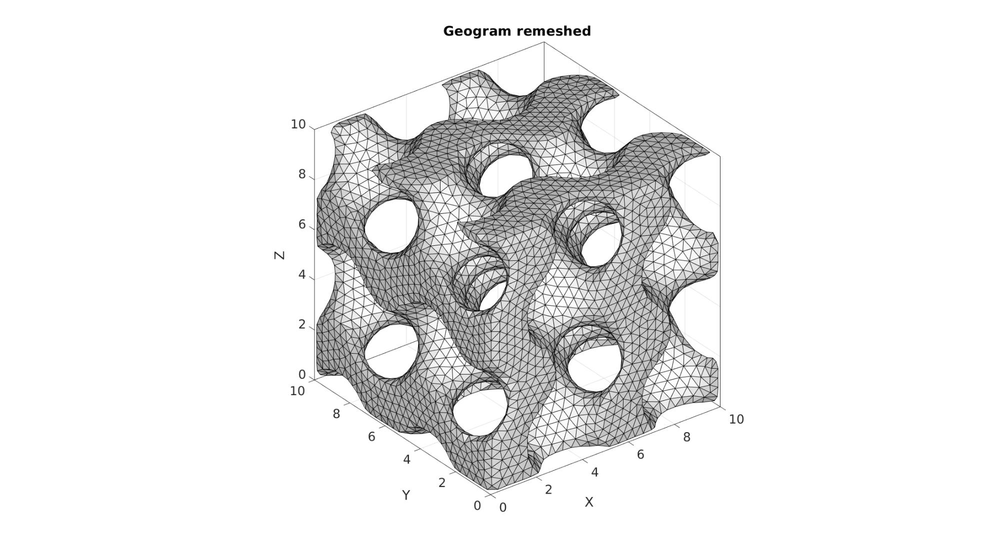
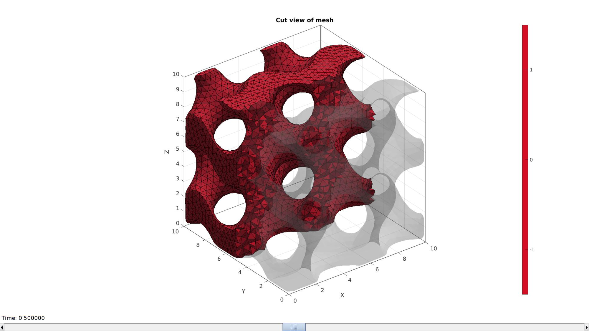
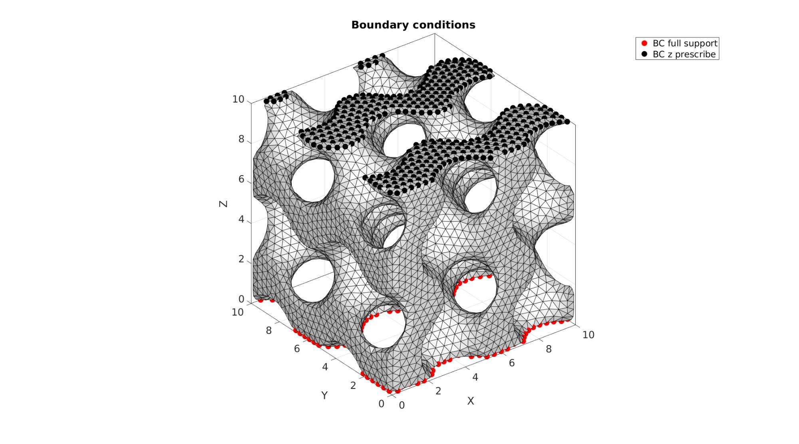
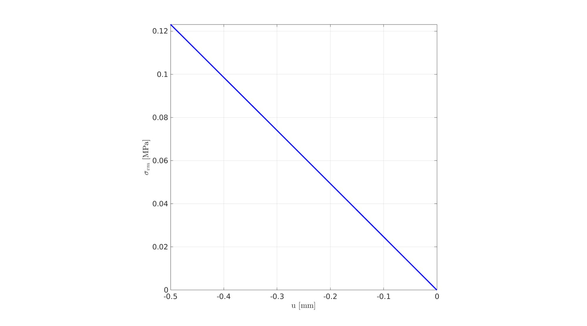

DEMO_febio_0010_trabeculae_compression
Below is a demonstration for:
- Building geometry for trabecular structure with tetrahedral elements
- Defining the boundary conditions
- Coding the febio structure
- Running the model
- Importing and visualizing the displacement and stress results
Contents
- Keywords:
- Plot settings
- Control parameters
- DEFINING GEOMETRY
- Using grouping to keep only largest group
- Remove non-manifold faces
- Smoothen mesh
- Tetrahedral meshing using tetgen (see also runTetGen)
- Visualizing mesh using meshView, see also anim8
- Defining the boundary conditions
- Defining the FEBio input structure
- Quick viewing of the FEBio input file structure
- Exporting the FEBio input file
- Running the FEBio analysis
- Import FEBio results
Keywords:
- febio_spec version 2.5
- febio, FEBio
- compression, tension, compressive, tensile
- displacement control, displacement boundary condition
- trabecular
- tetgen, meshing
- tetrahedral elements, tet4
- static, solid
- hyperelastic, Ogden
- displacement logfile
- Stress logfile
clear; close all; clc;
Plot settings
fontSize=20; faceAlpha1=0.8; markerSize=40; lineWidth1=3; lineWidth2=4; markerSize1=25;
Control parameters
% Path names defaultFolder = fileparts(fileparts(mfilename('fullpath'))); savePath=fullfile(defaultFolder,'data','temp'); % Defining file names febioFebFileNamePart='tempModel'; febioFebFileName=fullfile(savePath,[febioFebFileNamePart,'.feb']); %FEB file name febioLogFileName=fullfile(savePath,[febioFebFileNamePart,'.txt']); %FEBio log file name febioLogFileName_disp=[febioFebFileNamePart,'_disp_out.txt']; %Log file name for exporting displacement febioLogFileName_stress_prin=[febioFebFileNamePart,'_stress_prin_out.txt']; %Log file name for exporting stress febioLogFileName_stress_full=[febioFebFileNamePart,'_stress_full_out.txt']; %Log file name for exporting stress porousGeometryCase=1; ns=30; %Number of voxel steps across period for image data (roughly number of points on mesh period) sampleSize=10; %Heigh of the sample %Define applied displacement appliedStrain=0.2; %Linear strain (Only used to compute applied stretch) loadingOption='compression'; % or 'tension' or 'shear' switch loadingOption case 'compression' stretchLoad=1-appliedStrain; %The applied stretch for uniaxial loading displacementMagnitude=(stretchLoad*sampleSize)-sampleSize; %The displacement magnitude case 'tension' stretchLoad=1+appliedStrain; %The applied stretch for uniaxial loading displacementMagnitude=(stretchLoad*sampleSize)-sampleSize; %The displacement magnitude case 'shear' stretchLoad=1+appliedStrain; %The applied stretch for uniaxial loading displacementMagnitude=(stretchLoad*sampleSize)-sampleSize; %The displacement magnitude end %Material parameter set E_youngs=5; %Youngs modulus nu=0.3; %Poisson's ratio % mu=E_youngs/3; %FEA control settings numTimeSteps=10; %Number of time steps desired max_refs=15; %Max reforms max_ups=0; %Set to zero to use full-Newton iterations opt_iter=6; %Optimum number of iterations max_retries=5; %Maximum number of retires dtmin=(1/numTimeSteps)/100; %Minimum time step size dtmax=1/numTimeSteps; %Maximum time step size
DEFINING GEOMETRY
The trabecular structure is here simulated using
switch porousGeometryCase case 1 %Gyroid inputStruct.L=sampleSize; % characteristic length inputStruct.Ns=ns; % number of sampling points inputStruct.isocap=1; %Option to cap the isosurface inputStruct.surfaceCase='g'; %Surface type inputStruct.numPeriods=[2 2 2]; %Number of periods in each direction inputStruct.levelset=0.3; %Isosurface level [F,V,C,S]=triplyPeriodicMinimalSurface(inputStruct); case 2 %Stochastic structure inputStruct.L=1; % characteristic length inputStruct.Ns=ns; % number of sampling points inputStruct.Nw=60; % number of waves inputStruct.q0=25; % wave number inputStruct.relD=0.3; % relative density inputStruct.anisotropyFactors=[1 1 1]; %Anisotropy factors inputStruct.isocap=1; %Option to cap the isosurface [F,V,C,S]=stochasticMicrostructure(inputStruct); V=V.*sampleSize; case 3 %spinodoid inputStruct.isocap=true; % option to cap the isosurface inputStruct.domainSize=1; % domain size inputStruct.resolution=ns; % resolution for sampling GRF inputStruct.waveNumber=15*pi; % GRF wave number inputStruct.numWaves=200; % number of waves in GRF inputStruct.relativeDensity=0.62; % relative density: between [0.3,1] inputStruct.thetas=[90 0 0]; % conical half angles (in degrees) along xyz [F,V,C,S]=spinodoid(inputStruct); V=V.*sampleSize; end
Using grouping to keep only largest group
groupOptStruct.outputType='label'; [G,~,groupSize]=tesgroup(F,groupOptStruct); %Group connected faces [~,indKeep]=max(groupSize); %Index of largest group %Keep only largest group F=F(G==indKeep,:); %Trim faces C=C(G==indKeep,:); %Trim color data [F,V]=patchCleanUnused(F,V); %Remove unused nodes
Remove non-manifold faces
D=patchConnectivity(F,V,'ff');
logicManifold=sum(D.face.face>0,2)==3;
F=F(logicManifold,:);
C=C(logicManifold,:);
[F,V]=patchCleanUnused(F,V);
Smoothen mesh
%Smoothen surface mesh (isosurface does not yield high quality mesh) indKeep=F(C~=0,:);%F(size(Fi,1)+1:end,:); indKeep=unique(indKeep(:)); cPar.n=75; cPar.RigidConstraints=indKeep; %Boundary nodes are held on to cPar.Method='HC'; [V]=patchSmooth(F,V,[],cPar);
Visualizing geometry
cFigure; hold on; title('Triply-periodic minimal surface derived model of trabecular structure','FontSize',fontSize); gpatch(F,V,C,'k',1); % plotV(V(indKeep,:),'k.','MarkerSize',markerSize1); axisGeom(gca,fontSize); colormap gjet; icolorbar; camlight headlight; drawnow;
Tetrahedral meshing using tetgen (see also runTetGen)
% Create tetgen input structure inputStruct.stringOpt='-pq1.2AaY'; inputStruct.Faces=F; inputStruct.Nodes=V; inputStruct.holePoints=[]; inputStruct.faceBoundaryMarker=C; %Face boundary markers inputStruct.regionPoints=getInnerPoint(F,V); %region points inputStruct.regionA=2*tetVolMeanEst(F,V); inputStruct.minRegionMarker=2; %Minimum region marker % Mesh model using tetrahedral elements using tetGen [meshOutput]=runTetGen(inputStruct); %Run tetGen % Access model element and patch data Fb=meshOutput.facesBoundary; Cb=meshOutput.boundaryMarker; V=meshOutput.nodes; CE=meshOutput.elementMaterialID; E=meshOutput.elements;
%%%%%%%%%%%%%%%%%%%%%%%%%%%%%%%%%%%%%%%%%%%%% --- TETGEN Tetrahedral meshing --- 23-Nov-2020 11:24:01 %%%%%%%%%%%%%%%%%%%%%%%%%%%%%%%%%%%%%%%%%%%%% --- Writing SMESH file --- 23-Nov-2020 11:24:01 ----> Adding node field ----> Adding facet field ----> Adding holes specification ----> Adding region specification --- Done --- 23-Nov-2020 11:24:01 --- Running TetGen to mesh input boundary--- 23-Nov-2020 11:24:01 Opening /mnt/data/MATLAB/GIBBON/data/temp/temp.smesh. Delaunizing vertices... Delaunay seconds: 0.122054 Creating surface mesh ... Surface mesh seconds: 0.025053 Recovering boundaries... Boundary recovery seconds: 0.101186 Removing exterior tetrahedra ... Spreading region attributes. Exterior tets removal seconds: 0.033239 Recovering Delaunayness... Delaunay recovery seconds: 0.036612 Refining mesh... Refinement seconds: 0.452494 Optimizing mesh... Optimization seconds: 0.024783 Writing /mnt/data/MATLAB/GIBBON/data/temp/temp.1.node. Writing /mnt/data/MATLAB/GIBBON/data/temp/temp.1.ele. Writing /mnt/data/MATLAB/GIBBON/data/temp/temp.1.face. Writing /mnt/data/MATLAB/GIBBON/data/temp/temp.1.edge. Output seconds: 0.291213 Total running seconds: 1.08746 Statistics: Input points: 10656 Input facets: 21416 Input segments: 32124 Input holes: 0 Input regions: 1 Mesh points: 21227 Mesh tetrahedra: 100290 Mesh faces: 211288 Mesh faces on exterior boundary: 21416 Mesh faces on input facets: 21416 Mesh edges on input segments: 32124 Steiner points inside domain: 10571 --- Done --- 23-Nov-2020 11:24:02 %%%%%%%%%%%%%%%%%%%%%%%%%%%%%%%%%%%%%%%%%%%%% --- Importing TetGen files --- 23-Nov-2020 11:24:02 --- Done --- 23-Nov-2020 11:24:03
Visualizing mesh using meshView, see also anim8
meshView(meshOutput);
Defining the boundary conditions
The visualization of the model boundary shows colors for each side of the cube. These labels can be used to define boundary conditions.
%Define supported node sets logicFace=Cb==6; %Logic for current face set Fr=Fb(logicFace,:); %The current face set bcSupportList=unique(Fr(:)); %Node set part of selected face %Prescribed displacement nodes logicPrescribe=Cb==5; %Logic for current face set Fr=Fb(logicPrescribe,:); %The current face set bcPrescribeList=unique(Fr(:)); %Node set part of selected face
Visualizing boundary conditions. Markers plotted on the semi-transparent model denote the nodes in the various boundary condition lists.
hf=cFigure; title('Boundary conditions','FontSize',fontSize); xlabel('X','FontSize',fontSize); ylabel('Y','FontSize',fontSize); zlabel('Z','FontSize',fontSize); hold on; gpatch(Fb,V,'kw','none',0.5); hl(1)=plotV(V(bcSupportList,:),'r.','MarkerSize',markerSize); hl(2)=plotV(V(bcPrescribeList,:),'k.','MarkerSize',markerSize); legend(hl,{'BC full support','BC z prescribe'}); axisGeom(gca,fontSize); camlight headlight; drawnow;
Defining the FEBio input structure
See also febioStructTemplate and febioStruct2xml and the FEBio user manual.
%Get a template with default settings [febio_spec]=febioStructTemplate; %febio_spec version febio_spec.ATTR.version='2.5'; %Module section febio_spec.Module.ATTR.type='solid'; %Control section febio_spec.Control.analysis.ATTR.type='static'; febio_spec.Control.title='Cube analysis'; febio_spec.Control.time_steps=numTimeSteps; febio_spec.Control.step_size=1/numTimeSteps; febio_spec.Control.time_stepper.dtmin=dtmin; febio_spec.Control.time_stepper.dtmax=dtmax; febio_spec.Control.time_stepper.max_retries=max_retries; febio_spec.Control.time_stepper.opt_iter=opt_iter; febio_spec.Control.max_refs=max_refs; febio_spec.Control.max_ups=max_ups; % Material section %Material section febio_spec.Material.material{1}.ATTR.type='neo-Hookean'; febio_spec.Material.material{1}.ATTR.id=1; febio_spec.Material.material{1}.E=E_youngs; febio_spec.Material.material{1}.v=nu; %Geometry section % -> Nodes febio_spec.Geometry.Nodes{1}.ATTR.name='nodeSet_all'; %The node set name febio_spec.Geometry.Nodes{1}.node.ATTR.id=(1:size(V,1))'; %The node id's febio_spec.Geometry.Nodes{1}.node.VAL=V; %The nodel coordinates % -> Elements febio_spec.Geometry.Elements{1}.ATTR.type='tet4'; %Element type of this set febio_spec.Geometry.Elements{1}.ATTR.mat=1; %material index for this set febio_spec.Geometry.Elements{1}.ATTR.name='Bone sample'; %Name of the element set febio_spec.Geometry.Elements{1}.elem.ATTR.id=(1:1:size(E,1))'; %Element id's febio_spec.Geometry.Elements{1}.elem.VAL=E; % -> NodeSets febio_spec.Geometry.NodeSet{1}.ATTR.name='bcSupportList'; febio_spec.Geometry.NodeSet{1}.node.ATTR.id=bcSupportList(:); febio_spec.Geometry.NodeSet{2}.ATTR.name='bcPrescribeList'; febio_spec.Geometry.NodeSet{2}.node.ATTR.id=bcPrescribeList(:); %Boundary condition section % -> Fix boundary conditions febio_spec.Boundary.fix{1}.ATTR.bc='x'; febio_spec.Boundary.fix{1}.ATTR.node_set=febio_spec.Geometry.NodeSet{1}.ATTR.name; febio_spec.Boundary.fix{2}.ATTR.bc='y'; febio_spec.Boundary.fix{2}.ATTR.node_set=febio_spec.Geometry.NodeSet{1}.ATTR.name; febio_spec.Boundary.fix{3}.ATTR.bc='z'; febio_spec.Boundary.fix{3}.ATTR.node_set=febio_spec.Geometry.NodeSet{1}.ATTR.name; % -> Prescribe boundary conditions switch loadingOption case 'shear' febio_spec.Boundary.prescribe{1}.ATTR.bc='x'; febio_spec.Boundary.prescribe{1}.ATTR.node_set=febio_spec.Geometry.NodeSet{2}.ATTR.name; febio_spec.Boundary.prescribe{1}.scale.ATTR.lc=1; febio_spec.Boundary.prescribe{1}.scale.VAL=1; febio_spec.Boundary.prescribe{1}.relative=1; febio_spec.Boundary.prescribe{1}.value=displacementMagnitude; febio_spec.Boundary.prescribe{2}.ATTR.bc='z'; febio_spec.Boundary.prescribe{2}.ATTR.node_set=febio_spec.Geometry.NodeSet{2}.ATTR.name; febio_spec.Boundary.prescribe{2}.scale.ATTR.lc=1; febio_spec.Boundary.prescribe{2}.scale.VAL=1; febio_spec.Boundary.prescribe{2}.relative=1; febio_spec.Boundary.prescribe{2}.value=0; febio_spec.Boundary.prescribe{3}.ATTR.bc='y'; febio_spec.Boundary.prescribe{3}.ATTR.node_set=febio_spec.Geometry.NodeSet{2}.ATTR.name; febio_spec.Boundary.prescribe{3}.scale.ATTR.lc=1; febio_spec.Boundary.prescribe{3}.scale.VAL=1; febio_spec.Boundary.prescribe{3}.relative=1; febio_spec.Boundary.prescribe{3}.value=0; otherwise febio_spec.Boundary.prescribe{1}.ATTR.bc='z'; febio_spec.Boundary.prescribe{1}.ATTR.node_set=febio_spec.Geometry.NodeSet{2}.ATTR.name; febio_spec.Boundary.prescribe{1}.scale.ATTR.lc=1; febio_spec.Boundary.prescribe{1}.scale.VAL=1; febio_spec.Boundary.prescribe{1}.relative=1; febio_spec.Boundary.prescribe{1}.value=displacementMagnitude; febio_spec.Boundary.prescribe{2}.ATTR.bc='x'; febio_spec.Boundary.prescribe{2}.ATTR.node_set=febio_spec.Geometry.NodeSet{2}.ATTR.name; febio_spec.Boundary.prescribe{2}.scale.ATTR.lc=1; febio_spec.Boundary.prescribe{2}.scale.VAL=1; febio_spec.Boundary.prescribe{2}.relative=1; febio_spec.Boundary.prescribe{2}.value=0; febio_spec.Boundary.prescribe{3}.ATTR.bc='y'; febio_spec.Boundary.prescribe{3}.ATTR.node_set=febio_spec.Geometry.NodeSet{2}.ATTR.name; febio_spec.Boundary.prescribe{3}.scale.ATTR.lc=1; febio_spec.Boundary.prescribe{3}.scale.VAL=1; febio_spec.Boundary.prescribe{3}.relative=1; febio_spec.Boundary.prescribe{3}.value=0; end %Output section % -> log file febio_spec.Output.logfile.ATTR.file=febioLogFileName; febio_spec.Output.logfile.node_data{1}.ATTR.file=febioLogFileName_disp; febio_spec.Output.logfile.node_data{1}.ATTR.data='ux;uy;uz'; febio_spec.Output.logfile.node_data{1}.ATTR.delim=','; febio_spec.Output.logfile.node_data{1}.VAL=1:size(V,1); febio_spec.Output.logfile.element_data{1}.ATTR.file=febioLogFileName_stress_prin; febio_spec.Output.logfile.element_data{1}.ATTR.data='s1;s2;s3'; febio_spec.Output.logfile.element_data{1}.ATTR.delim=','; febio_spec.Output.logfile.element_data{1}.VAL=1:size(E,1); febio_spec.Output.logfile.element_data{2}.ATTR.file=febioLogFileName_stress_full; febio_spec.Output.logfile.element_data{2}.ATTR.data='sx;sy;sz;sxy;syz;sxz'; febio_spec.Output.logfile.element_data{2}.ATTR.delim=','; febio_spec.Output.logfile.element_data{2}.VAL=1:size(E,1);
Quick viewing of the FEBio input file structure
The febView function can be used to view the xml structure in a MATLAB figure window.
febView(febio_spec); %Viewing the febio file
Exporting the FEBio input file
Exporting the febio_spec structure to an FEBio input file is done using the febioStruct2xml function.
febioStruct2xml(febio_spec,febioFebFileName); %Exporting to file and domNode
Running the FEBio analysis
To run the analysis defined by the created FEBio input file the runMonitorFEBio function is used. The input for this function is a structure defining job settings e.g. the FEBio input file name. The optional output runFlag informs the user if the analysis was run succesfully.
febioAnalysis.run_filename=febioFebFileName; %The input file name febioAnalysis.run_logname=febioLogFileName; %The name for the log file febioAnalysis.disp_on=1; %Display information on the command window febioAnalysis.disp_log_on=1; %Display convergence information in the command window febioAnalysis.runMode='external';%'internal'; febioAnalysis.t_check=0.25; %Time for checking log file (dont set too small) febioAnalysis.maxtpi=1e99; %Max analysis time febioAnalysis.maxLogCheckTime=60; %Max log file checking time [runFlag]=runMonitorFEBio(febioAnalysis);%START FEBio NOW!!!!!!!!
%%%%%%%%%%%%%%%%%%%%%%%%%%%%%%%%%%%%%%%%%%%%% --- STARTING FEBIO JOB --- 23-Nov-2020 11:24:11 Waiting for log file... Proceeding to check log file...23-Nov-2020 11:24:11 ------- converged at time : 0.1 ------- converged at time : 0.2 ------- converged at time : 0.3 ------- converged at time : 0.4 ------- converged at time : 0.5 ------- converged at time : 0.6 ------- converged at time : 0.7 ------- converged at time : 0.8 ------- converged at time : 0.9 ------- converged at time : 1 --- Done --- 23-Nov-2020 11:25:17
Import FEBio results
if runFlag==1 %i.e. a succesful run
Importing nodal displacements from a log file
dataStruct=importFEBio_logfile(fullfile(savePath,febioLogFileName_disp),1,1);
%Access data
N_disp_mat=dataStruct.data; %Displacement
timeVec=dataStruct.time; %Time
%Create deformed coordinate set
V_DEF=N_disp_mat+repmat(V,[1 1 size(N_disp_mat,3)]);
Importing element stress from a log file
dataStruct=importFEBio_logfile(fullfile(savePath,febioLogFileName_stress_prin),1,1);
%Access data
E_stress_mat=dataStruct.data;
E_stress_mat(isnan(E_stress_mat))=0;
%Compute Von Mises
S_vm_ND = sqrt( 0.5*((E_stress_mat(:,1,:)-E_stress_mat(:,2,:)).^2 + (E_stress_mat(:,2,:)-E_stress_mat(:,3,:)).^2 + (E_stress_mat(:,1,:)-E_stress_mat(:,3,:)).^2));
%Compute volume weighted mean Von Mises stress
elemVol=tetVol(E,V); %Element volumes
totalVol=sum(elemVol); %Total volume
S_vm_mean=squeeze(sum(S_vm_ND.*repmat(elemVol,[1 1 size(S_vm_ND,3)]),1)./totalVol); %Mean Von Mises stress
appliedDisplacement=dataStruct.time.*displacementMagnitude;
cFigure; hold on;
xlabel('u [mm]','FontSize',fontSize,'Interpreter','Latex');
ylabel('$\sigma_{vm}$ [MPa]','FontSize',fontSize,'Interpreter','Latex');
plot(appliedDisplacement,S_vm_mean,'b','LineWidth',lineWidth1);
axis square; grid on; box on; axis tight;
set(gca,'FontSize',fontSize);
drawnow;
Plotting the simulated results using anim8 to visualize and animate deformations
DN_magnitude=sqrt(sum(N_disp_mat(:,:,end).^2,2)); %Current displacement magnitude % Create basic view and store graphics handle to initiate animation hf=cFigure; %Open figure gtitle([febioFebFileNamePart,': Press play to animate']); title('Displacement magnitude [mm]','Interpreter','Latex') hp=gpatch(Fb,V_DEF(:,:,end),DN_magnitude,'k',1); %Add graphics object to animate hp.FaceColor='interp'; axisGeom(gca,fontSize); colormap(gjet(250)); colorbar; caxis([0 max(DN_magnitude)]); axis(axisLim(V_DEF)); %Set axis limits statically camlight headlight; % Set up animation features animStruct.Time=timeVec; %The time vector for qt=1:1:size(N_disp_mat,3) %Loop over time increments DN_magnitude=sqrt(sum(N_disp_mat(:,:,qt).^2,2)); %Current displacement magnitude %Set entries in animation structure animStruct.Handles{qt}=[hp hp]; %Handles of objects to animate animStruct.Props{qt}={'Vertices','CData'}; %Properties of objects to animate animStruct.Set{qt}={V_DEF(:,:,qt),DN_magnitude}; %Property values for to set in order to animate end anim8(hf,animStruct); %Initiate animation feature drawnow;
Plotting the simulated results using anim8 to visualize and animate deformations
[CV]=faceToVertexMeasure(E,V,S_vm_ND(:,:,end));
% Create basic view and store graphics handle to initiate animation
hf=cFigure; %Open figure
gtitle([febioFebFileNamePart,': Press play to animate']);
title('$\sigma_{1}$ [MPa]','Interpreter','Latex')
hp=gpatch(Fb,V_DEF(:,:,end),CV,'k',1); %Add graphics object to animate
hp.FaceColor='interp';
axisGeom(gca,fontSize);
colormap(gjet(250)); colorbar;
caxis([min(S_vm_ND(:)) max(S_vm_ND(:))]/4);
axis(axisLim(V_DEF)); %Set axis limits statically
camlight headlight;
% Set up animation features
animStruct.Time=timeVec; %The time vector
for qt=1:1:size(N_disp_mat,3) %Loop over time increments
[CV]=faceToVertexMeasure(E,V,S_vm_ND(:,:,qt));
%Set entries in animation structure
animStruct.Handles{qt}=[hp hp]; %Handles of objects to animate
animStruct.Props{qt}={'Vertices','CData'}; %Properties of objects to animate
animStruct.Set{qt}={V_DEF(:,:,qt),CV}; %Property values for to set in order to animate
end
anim8(hf,animStruct); %Initiate animation feature
drawnow;
 end

GIBBON www.gibboncode.org
Kevin Mattheus Moerman, gibbon.toolbox@gmail.com
GIBBON footer text
License: https://github.com/gibbonCode/GIBBON/blob/master/LICENSE
GIBBON: The Geometry and Image-based Bioengineering add-On. A toolbox for image segmentation, image-based modeling, meshing, and finite element analysis.
Copyright (C) 2006-2020 Kevin Mattheus Moerman
This program is free software: you can redistribute it and/or modify it under the terms of the GNU General Public License as published by the Free Software Foundation, either version 3 of the License, or (at your option) any later version.
This program is distributed in the hope that it will be useful, but WITHOUT ANY WARRANTY; without even the implied warranty of MERCHANTABILITY or FITNESS FOR A PARTICULAR PURPOSE. See the GNU General Public License for more details.
You should have received a copy of the GNU General Public License along with this program. If not, see http://www.gnu.org/licenses/.